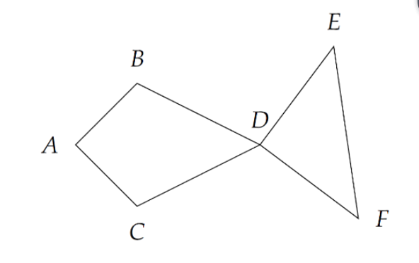

在平面坐标系上给定 $n$ 个不同的整点（也即横坐标与纵坐标皆为整数的点）。我们称从这 $n$ 个点中选择$6$个不同的点所组成的有序六元组 $\langle A,B,C,D,E,F\rangle$ 是一条「鱼」，当且仅当：$AB=AC,BD=CD,DE=DF$（身形要对称），并且 $\angle BAD,\angle BDA$ 与 $\angle CAD,\angle CDA$ 都是锐角（脑袋和屁股显然不能是凹的），$\angle ADE,\angle ADF$ 大于 $90^\circ$（也即为钝角或平角，为了使尾巴不至于翘那么别扭）。
下图就是一个合法的鱼的例子：

其中点的组成相同，但顺序不同的鱼视为不同的鱼，即 $\langle A,B,C,D,E,F\rangle$ 和 $\langle A,C,B,D,E,F\rangle$ 视为不同的两条鱼（毕竟鱼也有背和肚子的两面），同理 $\langle A,B,C,D,E,F\rangle$ 和 $\langle A,B,C,D,F,E\rangle$ 也可以视为不同的两条鱼（假设鱼尾巴可以打结）。
问给定的 $n$ 个点可以构成多少条鱼。特别的，数据保证 $n$ 个点互不重复。
 Comet OJ
Comet OJ